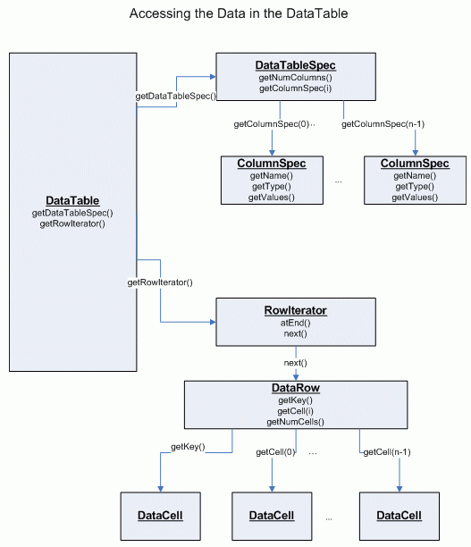

A {@link de.unikn.knime.core.data.DataTable DataTable} (see DataTable.java) is used to
pass data along between nodes in the workflow.
A DataTable has rows and columns. The number of columns is fixed. The
type of data stored in each column is well defined, and each column has
a unique name. Each row consists of a certain number of cells (which
contain the actual data) and a unique row identifier. The data in a
DataTable is read-only.
A DataTable contains a DataTableSpec (see DataTableSpec.java)
object which describes the structure of the table (the number of columns, the
column types, etc.) and a RowIterator (see RowIterator.java) which
allows to iterate over the rows of the table and actually access
the data.
A RowIterator returns a DataRow (see DataRow.java), which allows
access to each DataCell (see DataCell.java) in this row by index
(the index of the column). The number of rows is not known up-front, the iterator
indicates when it reaches the end of the table.
There is no random access to rows of the data table. The
underlying source could be sequential and of arbitrary size. Thus the
general DataTable interface doesn't provide any random access methods.
The DataTableSpec contains the meta information of the data table.
It can be used to query the columns' name, type, and the number of
columns. In addition to that it is also used to pass information
along to connected successors to let them know of the structure of
the table to come. So, if the successor's preparations for execution
(like the settings) depend on the structure of the data table of the
predecessor, it can be set up after it received the DataTableSpec.

DataCells are of certain type, depending on the type of data appearing
in the corresponding column. For each type of data cell certain objects exist
descriping the cell's properties, capabilities and compatibilities. This is the
DataCell derivative implementing DataValue, which defines how to
access the value stored in the data cell. And an implementation derived from
DataType (see DataType.class) holding a list of
compatible datatypes and providing comparators, renderers, etc.
Read more on datacells here
and in the FAQ.
Default implementations of DataCells can be found in the data.def
package. These implementations store the value of the cell in a member of the
corresponding Java data type.
DataTables could be arbitrary big, thus they shouldn't be copied or
held in memory.